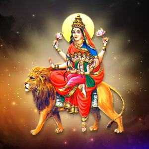

Durga Puja
Day 5

Skandamata (Sanskrit: स्कन्दमाता) is the fifth form of Hindu Goddess Durga. Literally meaning Mother of Skanda, her name comes from word,
Skanda is another name for war god and her son Kartikeya and Mata is the term for mother.As one of the Navadurga, Her worship
takes place on the fifth day of Navaratri(the nine divine nights of Navadurga). Her abode is in Vishuddha chakra.
Affiliation: Avatar of Parvati
Abode: Kailash
Mantra: सिंहासनगता नित्यं पद्माश्रितकरद्वया। शुभदास्तु सदा देवी स्कन्दमाता यशस्विनी॥
Weapon: Lotus, Two hands holding Skanda
Mount: lion
Consort: Shiva